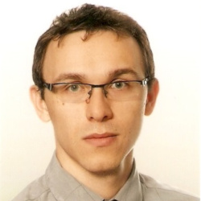

About Me
Let me tell you a few things...

BIO
I have over 12 years of experience as a design engineer, and have worked for all of that time in centrifugal compressor team. I started my career in Warsaw Institute of Aviation (WIA) working as contractor for GE Oil & Gas and later moved to Baker Hughes, when GE Oil & Gas was separated from GE. While I get most of my experience in mechanical design of centrifugal compressors and expanders I have also been involved in tasks that required some programming skills. I started with simple VBA macros in excel and then went through advanced VBA with callouts for external scripts, finishing with tool that combined the VBA excel tool with HYSYS process simulation software. I then was asked to support work on Python based performance analytics for reciprocating compressors and currently I am delivering full-stack applications for expander verification tools and co-develop scripts for a large compressor design platform.
College
B.Sc/M.Sc. Alumni
I graduated from University of Science and Technology in Krakow (AGH) for both my B.Sc. (2011) and M.Sc. (2013) in Power Engineering. During my 5 years at college I have been involved in numerous extracurricular activities such as participation (and co-creation!) of science club - Ignis - at the department of Energy and Fuels.
Past Work - WIA
Design/Lead Engineer
I've started (and still continue) my work in centrifugal compressor team dedicated to development of new products and technologies (Advanced Technologies organization in former GE O&G). From very begining I've been involved in multiple New Product Introduction (NPI) projects, for example: subsea motor-compressors (Blue-C), wet gas compression (WGC) and high-pressure ratio compressor (HPRC). Alongisde my main design work I have been also supporting ITO-level projects. These supporting activities gave me opportunity to increase experience in performing various mechanical verifications. In addition to mechanical engineering activities, for past couple of years I've been working on development of technical tools that helped me develop software engineering skills. I started with VBA excel tools connected with external libraries (HYSYS) and then switched to developing Python algorithms and web applications.
Current Work - BH
Lead Engineer
I continued my work in team dedicated to development of new products but extending to other turbomachinery like axial compressors and turboexpanders. With increased experience I was involved in more extensive role in New Poduct Development (NPD) projects making regular appearance during various design reviews. In addition to increased technical experience I have been also responsible for training and guiding new team members with team extension in Warsaw office. In last 2 years I have been appointed as technical leader in NPD program focused on development of new turbomachinery in CCUS market. I've increased my experience in software engineering workin on various technical tools with various degree of complexity. In addition I have been responsible for building and maintaining NPD team development labs used for internal testing and creation of proof-of-concept (POC) tools.